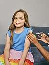

vaccination

Definition: Vaccination is the administration of a vaccine to help the immune system develop immunity from a disease. Vaccines contain a microorganism or virus in a weakened, live or killed state, or proteins or toxins from the organism. In stimulating the body's adaptive immunity, they help prevent sickness from an infectious disease. When a sufficiently large percentage of a population has been vaccinated, herd immunity results. Herd immunity protects those who may be immunocompromised and cannot get a vaccine because even a weakened version would harm them. The effectiveness of vaccination has been widely studied and verified. Vaccination is the most effective method of preventing infectious diseases; widespread immunity due to vaccination is largely responsible for the worldwide eradication of smallpox and the elimination of diseases such as polio and tetanus from much of the world. However, some diseases, such as measles outbreaks in America, have seen rising cases due to relatively low vaccination rates in the 2010s – attributed, in part, to vaccine hesitancy. According to the World Health Organization, vaccination prevents 3.5–5 million deaths per year.
Source: Wikipedia
Wikipedia Page (Something wrong with this association? Let us know.)
Wikidata Page (Something wrong with this association? Let us know.)